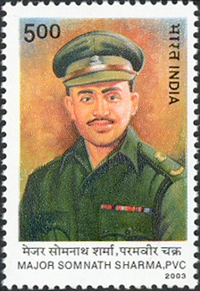

Heroes · 1947
Major Somnath Sharma: The First Param Vir

Every roll of honour has to begin with a single name. India's highest gallantry award, the Param Vir Chakra, begins with Major Somnath Sharma — a young officer who, with his hand in a plaster cast, held a thin line that may well have saved Kashmir.
The first war
In late 1947, soon after Independence and Partition, tribal raiders backed by Pakistan poured into Jammu and Kashmir, advancing toward Srinagar. The newly independent Indian Army rushed to defend the city, with the airfield at Srinagar as the vital lifeline connecting Kashmir to the rest of the country.[1]
On 3 November 1947, Major Somnath Sharma's company of the 4th Battalion, Kumaon Regiment, was sent to Badgam, on the approach to the airfield. There they found themselves hugely outnumbered, facing a force determined to break through to Srinagar.[2]

The line that held
Though his right hand was in a plaster cast from a recent injury, Sharma moved among his men under heavy fire, exposing himself repeatedly to direct the defence, filling magazines for his soldiers, and refusing every chance to fall back. His final radio message reported the enemy only fifty yards away, his men outnumbered seven to one — but his decision to hold unwavering.[2]
He was killed when an enemy mortar shell detonated the ammunition he was carrying. But his company held long enough to blunt the advance and buy time for reinforcements. The airfield — and the route to Srinagar — was saved.
Remember us not as heroes craving fame, but as sons who bore the weight of a motherland.

Where the honour begins
For his supreme sacrifice, Major Somnath Sharma was awarded the Param Vir Chakra — the very first, gazetted with effect from the day India's gallantry awards were instituted.[2] Every recipient since stands, in a sense, in the line he began.
There is a quiet symmetry in the fact that India's highest honour for valour starts not with a great offensive victory, but with a defensive last stand by an injured officer who simply would not leave his post. That, more than any conquest, is the spirit the medal was made to recognise — and the spirit my book was written to remember.
Sources & further reading
All images via Wikimedia Commons, used under the licences shown in each caption.